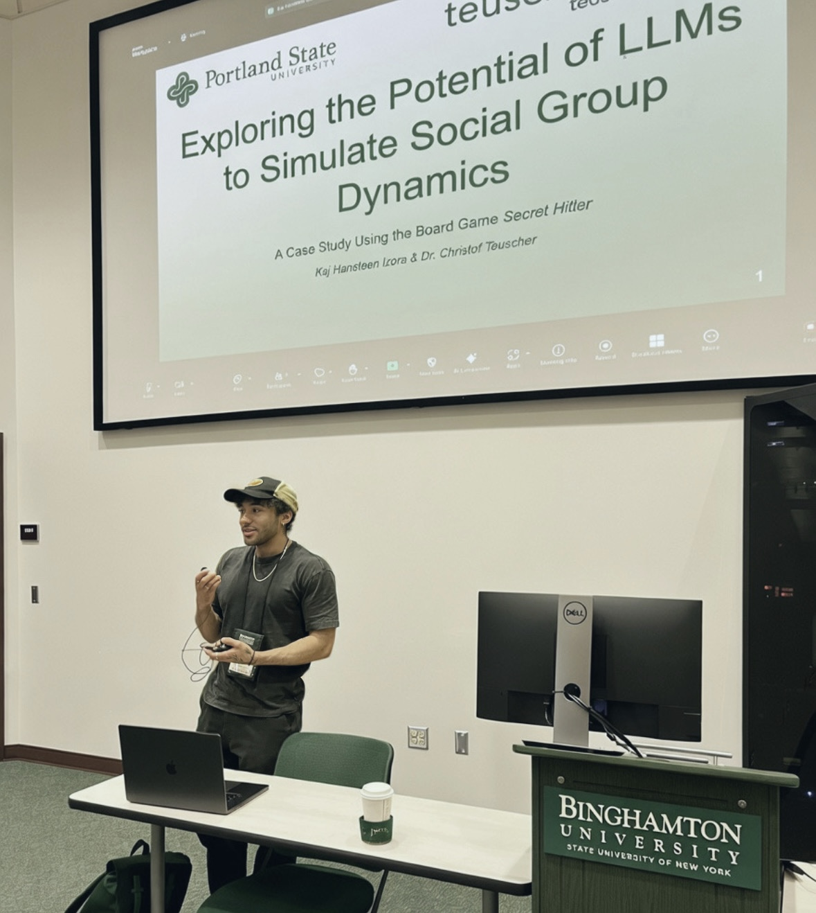
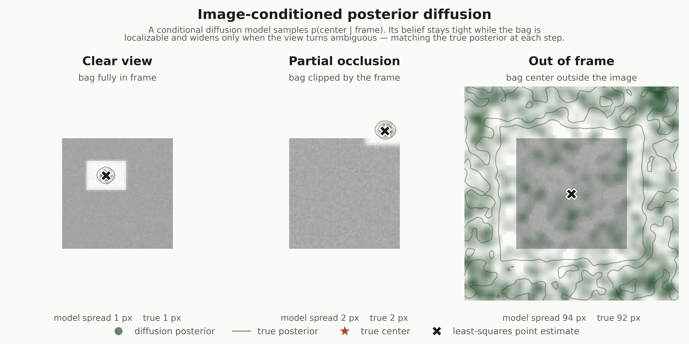
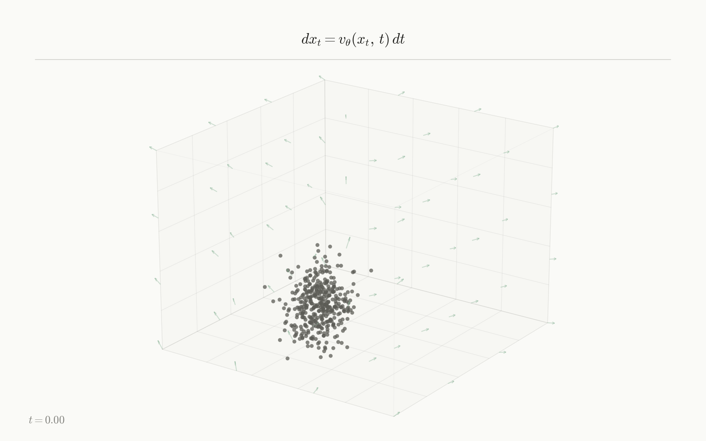
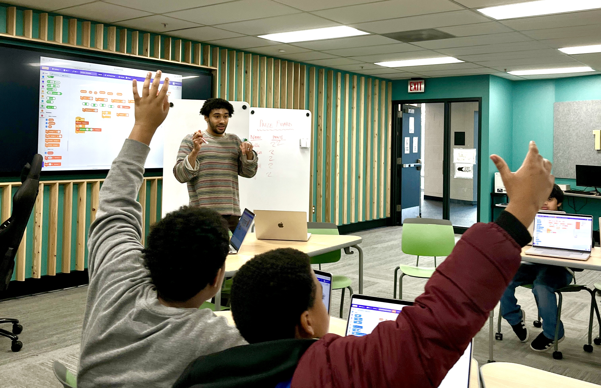

I am an Associate Physical AI Engineer at Rose City Robotics, focusing on real-world robot learning and robust estimation. My research centers on Bayesian perception, simulation-based inference, and continuous normalizing flows to build robots that can reason under uncertainty.
Previously, I was a 2025 NSF RTG Fellow working on Bayesian state estimation for automated EV battery disassembly. I graduated with a B.S. in Science, Data Science, and Social Science (minor in Systems Science) from Portland State University in 2025, where my work on multi-agent LLM simulations was published in the Northeast Journal of Complex Systems.
Looking forward, I plan to start a PhD in Fall 2027, continuing to build uncertainty-aware perception systems for physical robots.

The common bet across all of this: simulation is where intelligent behavior can be grown and studied — from low-level pose posteriors to multi-agent social reasoning.
NSF RTG research investigating multi-modal pose distributions under heavy occlusion. Implemented Sequential Neural Posterior Estimation (SNPE) to construct calibrated belief states for robotic tool alignment, trained on 1M+ domain-randomized renders from a parallelized Isaac Sim pipeline.
A full perception–estimation–policy–control loop on the Unitree G1: locate a grocery bag, navigate to it, grasp it, load it into a car, and return — all driven by calibrated state estimates that update with live feedback during each action. 97% task success across 100+ live conference trials.
A multi-agent simulation with a dual-layer architecture separating private chain-of-thought from public speech — measuring the gap between what agents intend and what they say. Used to study emergent coordination, deception, and theory-of-mind reasoning in LLMs.

A conditional diffusion model trained to sample p(center | frame) over the bag's location from a single camera image. As the bag is occluded or leaves the view, its belief widens from a tight mode to a ring of hypotheses — matching the true Monte-Carlo posterior to within about a pixel of spread, where a least-squares estimate collapses to one impossible point. Calibration verified with simulation-based calibration.

Continuous normalizing flows and flow matching built from first principles — hand-coded vector fields, ODE integration, and flow-matching objectives. The same objective behind the action head in Ai2's MolmoBot.
Hansteen Izora, K., & Teuscher, C. (2025). Exploring the Potential of Large Language Models (LLMs) to Simulate Social Group Dynamics: A Case Study Using the Board Game “Secret Hitler.” Northeast Journal of Complex Systems, 7(2), Article 5.

I am committed to making robotics and computing research accessible to students from underrepresented backgrounds. As a Tech and Maker Space Associate at Self Enhancement, Inc., I designed and taught an introductory AI and Python curriculum for Black youth with no prior coding experience. My goal is to build accessible pathways into computer science and AI research.